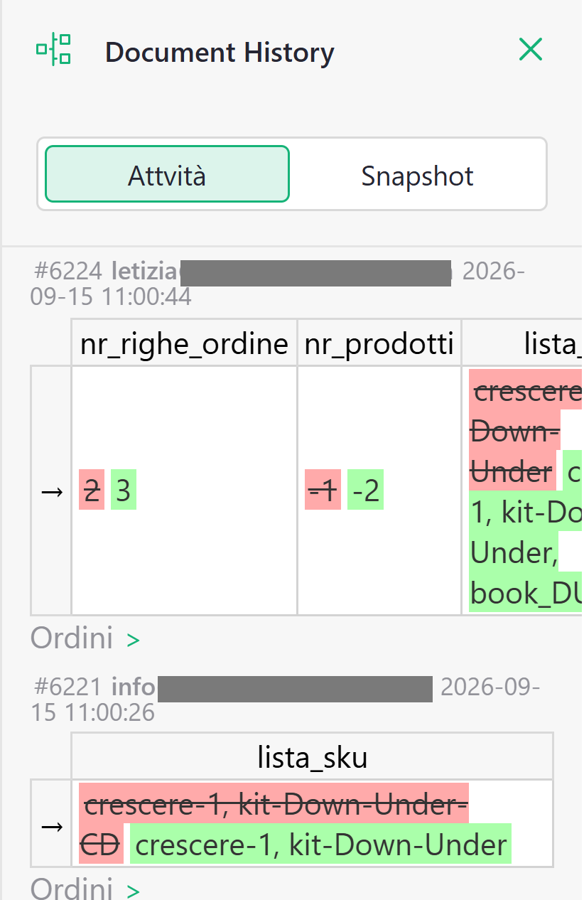
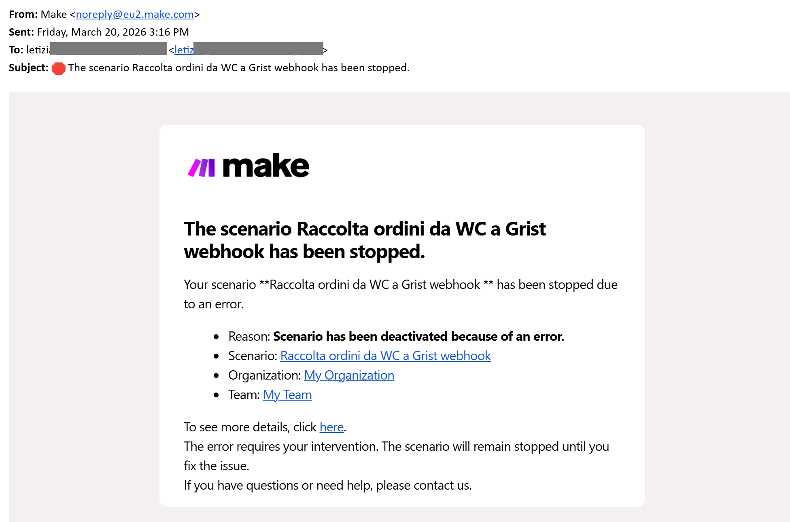
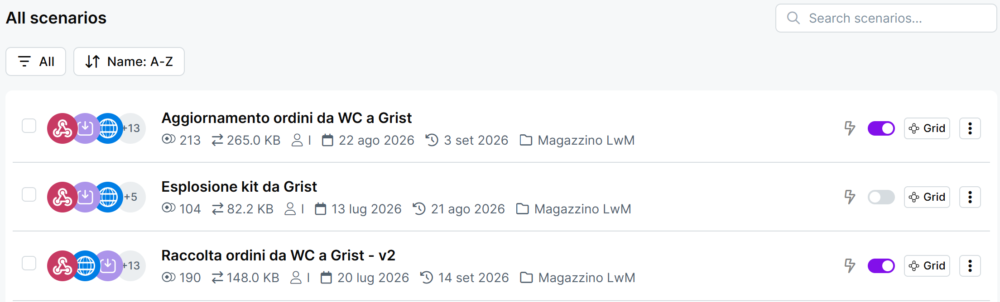

Guida 9
Manutenzione e problemi
Versione del 14/09/2026 · Sistema «Magazzino LwM»
Questa guida si apre in tre momenti: a scadenza, per i controlli che nessuno ti ricorderà di fare; quando qualcosa non torna e non sai nemmeno da che parte cominciare; e prima di scrivere a Paolo, per mettere nel messaggio le cose giuste.
§1 In breve
C'è una frase che torna in tutte le guide e che qui diventa il criterio di tutto: quasi niente, in questo sistema, si rompe facendo rumore. Un automatismo fermo non manda un messaggio. Un ordine cancellato sul sito continua a scaricare il magazzino. Le mail che smettono di partire producono una casella di posta tranquilla.
Da qui la regola: il silenzio non è una conferma. I controlli non si fanno quando si sospetta qualcosa, si fanno a calendario — è l'unico modo per accorgersi di una cosa che non ti sta chiamando.
L'altra metà della guida serve al momento opposto, quando qualcosa non torna davvero. Lì l'istinto giusto non è cercare l'errore ma ricostruire da dove viene il numero, e per farlo ci sono tre posti precisi.
| Se vuoi… | Sezione |
|---|---|
| Sapere cosa controllare, e ogni quanto | 2 |
| Capire dove guardare quando un numero non torna | 3 |
| Partire da un sintomo e trovare la guida giusta | 4 |
| Riaccendere un automatismo fermo, o riprendere un lavoro a metà | 5 |
| Rinnovare l'autorizzazione della posta | 6 |
| Rimediare a un ordine cancellato, uno SKU doppio, un articolo eliminato | 7 |
| Sapere cosa il sistema non riesce a intercettare | 8 |
| Sapere cosa non è ancora stato provato sul campo | 9 |
| Capire cosa puoi fare tu e cosa no | 10 |
| Scrivere a Paolo una segnalazione che basti | 11 |
§2 Il calendario dei controlli
| Quando | Cosa guardi | Dove |
|---|---|---|
| Ogni settimana e ogni mese | La routine di lavoro: ordini aperti, pendenze dei resi | Guida 0, sezione 6 |
| Ogni mese | I tre automatismi accesi in Make | Sezione 5 |
| Ogni trimestre, insieme ai report | Il numero di righe del documento | Sezione 2, qui sotto |
| La copia di sicurezza del documento | Sezione 2, qui sotto | |
| Il confronto fra gli ordini del sito e quelli di Grist (primi due trimestri) | Sezione 2, qui sotto | |
| Ogni sei mesi | L'autorizzazione della posta — la prossima scade il 14 febbraio 2027 | Sezione 6 |
| Quando arriva una mail in inglese da Make | Se un automatismo si è spento da solo | Sezione 5 |
La prima riga è la routine operativa e sta tutta nella guida 0: non la ripetiamo qui. Le altre sono i controlli di manutenzione, e sono quelli che nessuna pagina ti mostrerà mai da sola.
Il numero di righe
Il piano gratuito di Grist tiene 5.000 righe in tutto il documento, non per tabella. Il conteggio si legge in «Dati grezzi», dove ogni tabella è elencata con il suo numero di righe (guida 8, sezione 13).
Ai volumi attuali le vendite consumano poche centinaia di righe l'anno. La voce grossa è Prodotti, che da sola ne occupa circa 1.200 — ed è la tabella che il sistema non usa per funzionare. Non è un'emergenza: è che il limite, quando arriva, arriva senza preavviso, e conviene vederlo avvicinarsi con un anno di anticipo.
La copia di sicurezza
Una volta a trimestre, scarica una copia dell'intero documento e tienila da parte con la data nel nome.
Si fa dal menu di condivisione, in alto a destra dello schermo, con la voce che esporta il documento intero. È esattamente l'export che la guida 7 ti dice di non usare per i report, perché scarica tutte le tabelle e tutte le righe senza filtri: qui è quello giusto, per la stessa ragione.
Perché funziona così — la rete di Grist dura trenta giorni
Grist salva da sé delle copie complete del documento, ma sul piano gratuito si torna indietro al massimo di 30 giorni. Un errore fatto a gennaio e scoperto a marzo non si annulla più: si ricostruisce a mano.
La copia trimestrale serve a quello. Non la aprirai quasi mai, e il giorno in cui serve vale il trimestre intero.
Il confronto con il sito
Nessuno, in questo sistema, confronta periodicamente gli ordini di WooCommerce con quelli di Grist. Se il primo automatismo perde un ordine e su quell'ordine nessuno mette più mano, non arriva nessun avviso.
Per i primi due trimestri, quando prepari i report, vale la pena fare il confronto a mano: conta gli ordini del trimestre su WooCommerce e confrontali con quelli della pagina Ordini filtrata sullo stesso periodo. Se i numeri non coincidono, le cause sono tre, in ordine di probabilità: un ordine cancellato sul sito (che in Grist è rimasto), un ordine inserito a mano in Grist (che sul sito non c'è mai stato), un ordine mai arrivato. I primi due si spiegano e si chiudono; il terzo è da segnalare.
Dopo due trimestri puliti, il controllo diventa facoltativo.
§3 I tre posti dove si guarda prima di chiedere
Quasi tutte le domande che ti verranno hanno una di queste tre forme, e ciascuna ha il suo posto.
LA DOMANDA DOVE SI RISPONDE
────────── ────────────────
«Questo numero di magazzino
non torna» ────────► Pagina MOVIMENTI DI UN ARTICOLO
filtrata sullo SKU
→ tutti i movimenti, uno per uno
«Questo dato era diverso,
chi l'ha cambiato?» ────────► STORIA DOCUMENTO → «Attività»
→ chi, cosa, quando
«Questo ordine (o questo reso)
non è mai arrivato» ────────► MAKE → cronologia dello scenario
→ ha girato, o è fermo?
La pagina Movimenti di un articolo è lo strumento di diagnosi delle giacenze: filtri su uno SKU e vedi tutti i suoi movimenti — vendite, resi, carichi, differenze — con tipo, stato, magazzino e quantità. Il metodo completo, con le tre domande da farsi nell'ordine, è nella guida 6, sezione 9. Ricorda solo la trappola: quella pagina mostra anche le righe che non contano, ed è il motivo per cui esiste. Sommare a occhio non dà il venduto.
«Storia documento», nel pannello di sinistra, apre una finestra che si intitola «Document History» — Grist non l'ha tradotta — e che ha una scheda «Attività» che elenca le modifiche recenti e chi le ha fatte — tu e Virginia entrate con due account diversi, quindi qui si distingue. È il posto giusto quando un numero è cambiato e nessuno si ricorda di aver toccato niente, ed è anche il posto dove ritrovare un valore vecchio che è stato sovrascritto. Guardare la storia è sicuro; riportare indietro il documento a una copia precedente no: è un'operazione da consulente.
{kind=link}

La cronologia di Make risponde solo alla domanda «ha girato o è fermo». Come si legge, e perché il verde non è una garanzia, è nella guida 2, sezione 8.
Un'ultima cosa prima di allarmarti: se la stranezza riguarda quello che vedi a schermo e non un numero — una pagina con meno righe del solito, una colonna sparita — la causa è quasi sempre un filtro o una colonna nascosta, e si risolve in guida 8. Ricaricare la pagina rimette a posto tutto ciò che non è stato salvato.
§4 Sintomo → causa → azione
Questa tabella non sostituisce quelle delle singole guide: serve quando non sai nemmeno in quale guida guardare.
| Il sintomo | La causa probabile | Dove si va |
|---|---|---|
| Un ordine c'è sul sito e non in Grist | L'automatismo era fermo, o l'esecuzione si è interrotta | Sezione 5 |
| Un ordine cancellato sul sito continua a contare | Le cancellazioni non arrivano in Grist | Sezione 7 |
| Un rimborso annullato sul sito è ancora in Grist | Stessa ragione | Sezione 7 |
| I totali del trimestre non tornano con WooCommerce | Un ordine cancellato, una modifica di riga non recepita, un rimborso di solo importo | Guida 7, sezione 10 |
| Un trimestre vecchio mostra numeri diversi da quelli inviati | L'anagrafica viene letta oggi: qualcuno ha cambiato un prezzo, un nome o una data | Sezione 8, guida 7 sezione 5 |
| Una giacenza non torna | Le tre domande, a partire da Movimenti di un articolo | Guida 6, sezione 9 |
| Un carico inserito non ha alzato niente | Data anteriore, SKU non agganciato, SKU di un kit, stato non Completato | Guida 6, sezione 5 |
| Una riga d'ordine è accesa in arancione | Lo SKU non si aggancia a nessun articolo | Guida 5, sezione 13 — se l'articolo è stato eliminato, sezione 7 qui |
| Arriva la mail «articolo nuovo» per un prodotto che esiste già | Lo SKU del sito non coincide con quello di Grist | Sezione 7 |
| Lo stesso prodotto compare due volte, con lo stock diviso | Stessa causa | Sezione 7 |
| Le mail di avviso hanno smesso di arrivare | Autorizzazione scaduta, oppure automatismo fermo | Sezioni 6 e 5 |
| Un numero è diventato zero dopo che qualcuno ha rinominato qualcosa | Una colonna o una voce di menu rinominata | Si chiama Paolo (sezione 10) |
| Un kit non ha giacenza da nessuna parte | È corretto: un kit non ha giacenza propria | Sezione 8 |
| Una pagina mostra meno righe del solito | Un filtro | Guida 8, sezioni 4 e 5 |
| Non riesci a capire perché un numero è quello che è | — | Sezione 11: cosa allegare per segnalarlo |
§5 Quando un automatismo è fermo
Acceso è l'unica condizione normale, per tutti e tre. Te ne accorgi in tre modi: dal controllo mensile, da un ordine che non è arrivato, oppure da una mail.
La mail che sembra pubblicità
Quando uno scenario sbaglia più volte di seguito, Make lo spegne da solo e avvisa l'intestatario dell'account, che sei tu. È una mail in inglese, con l'aspetto delle comunicazioni di servizio che si archiviano senza leggere. Paolo non la riceve: finché non glielo dici, per lui non è successo niente.
{kind=link}

Riaccenderlo
Si riaccende con l'interruttore accanto al nome dello scenario, nella schermata iniziale di Make.
{kind=link}

Se mentre era spento sono arrivati degli ordini, Make non li ha buttati: li ha messi in coda. Riaccendendo lo scenario ti chiederà cosa farne — se eliminare i dati vecchi in attesa o processarli.
AUTOMATISMO SPENTO AUTOMATISMO RIACCESO
────────────────── ────────────────────
Ordine 17412 ──┐
Ordine 17413 ──┤ «Processa» ──► tutti scritti in Grist,
Ordine 17414 ──┼──► [ in coda ] ──► uno dopo l'altro
Ordine 17415 ──┘ │
└── «Elimina» ──► persi, senza avviso
Quanto si può restare fermi? La coda non ha una scadenza a giorni, e il numero di richieste che può contenere è dell'ordine delle migliaia: con due o trecento ordini l'anno non lo si sfiora nemmeno. In pratica, uno scenario fermo per qualche giorno non fa perdere ordini — a patto di rispondere «processa».
Perché funziona così — rigiocare vecchi ordini non crea doppioni
Prima di scrivere un ordine, l'automatismo controlla se in Grist c'è già: se lo trova, si ferma. È la stessa protezione che rende innocuo salvare due volte lo stesso ordine sul sito.
È il motivo per cui processare una coda di venti payload vecchi è sicuro: quelli già scritti vengono riconosciuti e saltati.
Avvisa Paolo comunque, anche se sembra tutto tornato a posto. Uno scenario che si spegne da solo ha una causa, e la causa non si spegne da sola.
Un lavoro rimasto a metà
Quando un'esecuzione si interrompe nel mezzo, Make la mette da parte invece di buttarla. Le trovi nella pagina dello scenario, in una sezione dedicata alle esecuzioni incomplete — in inglese, «Incomplete executions» — separata dalla cronologia normale.
Ogni riga si apre e si può riprendere: Make riparte dal punto in cui si era fermata, senza rifare quello che aveva già fatto. È il gesto giusto quando l'interruzione è stata un intoppo passeggero, per esempio un'indisponibilità momentanea di Grist o di WooCommerce.
Due cautele:
- Prima guarda in Grist. Se nel frattempo hai già sistemato quell'ordine a mano, la ripresa lo rifarebbe: in quel caso la riga si scarta, non si riprende.
- Se una ripresa fallisce di nuovo, fermati. Due tentativi bastano; al terzo il problema non è passeggero ed è da segnalare.
§6 La posta che smette di partire
Le mail di avviso partono da un indirizzo creato apposta per il sistema, e il collegamento fra quell'indirizzo e Make va rinnovato ogni sei mesi. La prossima scadenza è il 14 febbraio 2027.
Il punto non è la procedura, che dura trenta secondi. È la conseguenza: se scade, le mail smettono di partire in silenzio. E siccome in questo sistema «nessuna mail» significa di norma «nessun problema», un guasto della posta ha esattamente lo stesso aspetto di una settimana tranquilla.
Come si rinnova
- In Make, nel pannello di sinistra, apri «Credentials» e poi «Connections».
- Trova la riga «Gmail per notifiche Magazzino LwM».
- Clicca il pulsante «Reauthorize», a destra sulla stessa riga, e conferma con l'account della posta del magazzino.
Dove si legge la scadenza
La data è scritta dentro la finestra del modulo Gmail, dentro uno degli scenari, in questa forma:
È l'unico motivo per cui vale la pena aprire un modulo di Make: si guarda la data e si chiude senza salvare niente. La regola della guida 2 resta valida anche qui — un modulo aperto e salvato per sbaglio continua a girare e a risultare verde, e il danno si vede giorni dopo sotto forma di numero sbagliato.
Cosa continua a funzionare anche senza posta
Le mail non sono l'unico presidio, e vale la pena saperlo per non immaginare il peggio. Un articolo creato automaticamente resta comunque marcato «da verificare» in arancione dentro Articoli, anche se la mail non parte. Quello che si perde è la sollecitazione, non l'informazione: le tre mail vanno a te, a Virginia e a Paolo, e le cose che segnalano si ritrovano tutte anche guardando Grist.
§7 Rimediare a un guaio già fatto
Un ordine cancellato sul sito
Le cancellazioni non arrivano in Grist: l'ordine resta, continua a scaricare il magazzino e continua a entrare nei report.
Il rimedio: portalo su Annullato in Grist. Lo trovi cercandone il numero nella pagina Ordini. Lo stato Annullato lo toglie dai report e dal magazzino lasciandone traccia — che è sempre preferibile a eliminarlo, qui come sul sito.
Per il futuro vale la regola della guida 3: un ordine sbagliato si annulla, non si cancella, e quel cambio di stato arriva in Grist da solo.
Un rimborso annullato sul sito
Stessa ragione e stessa forma: il record di reso resta in Grist, continua a stornare nei report e, se avevi dichiarato il rientro, tiene in magazzino una copia che non c'è. Si porta il reso su Annullato: la procedura è nella guida 4, sezione 9. (comportamento atteso, non ancora verificato sul campo)
Lo SKU del sito non coincide con quello di Grist
Te ne accorgi in due modi: arriva la mail «articolo nuovo» per un prodotto che sai benissimo di avere già, oppure lo stesso prodotto compare due volte nelle giacenze, con lo stock diviso fra i due codici.
La sequenza è questa, e il primo passo è quello che conta:
- Non toccare lo SKU in Grist. È la regola del catalogo, e non ha eccezioni: lo SKU di un articolo esistente non si cambia (guida 5).
- Correggi lo SKU sul sito, riportandolo identico a quello di Grist.
- Riaggancia le righe d'ordine già arrivate. La correzione sul sito non tocca gli ordini passati, che restano con il codice vecchio: su ciascuna riga arancione si riseleziona lo SKU dal menu (guida 5, sezione 13). Ricreare o correggere l'articolo non le riaggancia da solo.
- L'articolo doppione. Prova a eliminarlo: se la colonna del presidio non protesta, non ha più niente attaccato e se ne può andare. Se protesta, vuol dire che qualcosa lo referenzia ancora — una riga d'ordine o una ricetta — e allora resta dov'è e si segnala.
- Le giacenze finite sul doppione si spostano sull'articolo buono con un solo movimento a due righe, come spiega la guida 6, sezione 7.
Un articolo eliminato per errore
Succede, e non è irreparabile. Quello che si rompe è preciso:
- nelle righe d'ordine che lo usavano, lo SKU e le colonne che ne derivavano — il nome del prodotto, e il resto — si svuotano, e si accende l'avviso arancione «SKU non trovato in Articoli»;
- nelle ricette dei kit di cui era componente, la riga resta ma senza il prodotto;
- giacenze iniziali, date e dati anagrafici di quell'articolo se ne vanno con lui.
Il rimedio, nell'ordine:
- Ricrea l'articolo con lo stesso identico SKU e i suoi dati (guida 5, sezione 7).
- Riseleziona lo SKU su ogni riga d'ordine rimasta arancione. Le trovi filtrando o cercando nelle righe: è il passo più lungo, e non c'è modo di saltarlo.
- Rimetti il componente nelle righe di
Bundlerimaste vuote. - Reinserisci giacenza iniziale e date nella pagina Giacenze: senza le date, le colonne del venduto vanno in errore (guida 6, sezione 6).
Perché funziona così — i vecchi valori si ritrovano
Se non ricordi la giacenza iniziale o la data che c'era prima, non tirare a indovinare: la scheda «Attività» della storia del documento conserva i valori precedenti (sezione 3). È uno dei pochi casi in cui quella pagina serve a ricostruire e non solo a capire.
Vale però solo entro i 30 giorni delle copie di Grist. Oltre, è un caso da segnalare.
Una modifica fatta alle righe sul sito
Quantità corrette, prezzi cambiati, prodotti aggiunti o tolti da un ordine esistente: da WooCommerce non arriva niente. Si rifanno a mano anche in Grist, ed è la procedura della guida 3, sezione 10.
§8 I limiti noti
Sono tutti già dichiarati nelle altre guide. Stanno insieme qui perché hanno una cosa in comune: nessuno di essi produce un errore, un colore o una mail.
| Il limite | Come te ne accorgi | Cosa fare |
|---|---|---|
| Un ordine cancellato sul sito resta in Grist | Solo confrontando col sito | Sezione 7 |
| Un rimborso annullato sul sito resta in Grist | Solo se te lo ricordi | Sezione 7 |
| Le modifiche alle righe fatte sul sito non arrivano | Solo se te lo ricordi | Sezione 7 |
| Un kit venduto senza ricetta non scarica i pezzi | Il kit compare nella pagina Giacenze | Guida 5, sezioni 10 e 11 |
| Il reso di un kit dopo un cambio di ricetta fa rientrare il pezzo nuovo | Nessun modo automatico | Guida 4, sezione 6 |
| L'anagrafica è letta oggi: cambiare un prezzo o un nome riscrive i trimestri passati | Riaprendo un trimestre vecchio e trovandolo diverso | Guida 5, sezione 9: un prodotto che cambia è un articolo nuovo |
| L'avviso sui carichi non guarda la data, lo SKU non agganciato e lo SKU di un kit | La riga sembra pulita e la giacenza non si muove | Riapri Giacenze e verifica che il numero sia salito (guida 6, sezione 5) |
| Gli «Altri movimenti» non hanno nessun presidio: nemmeno sul segno | Nessuno | La checklist della guida 3, sezione 12 |
La colonna N.C. delle magliette si accende solo se la differenza è positiva | Una variante senza taglia con giacenza a zero non compare | Guida 6, sezione 8 |
| La giacenza di un kit non è consultabile in nessuna pagina | Cercandola e non trovandola | È corretto: guarda i componenti (guida 6, sezione 3) |
| La spedizione rimborsata non viene stornata da nessuna colonna | Nel caso misto — prodotti più spedizione — nessun presidio la intercetta | Annotalo nel motivo del rimborso e segnalalo (guida 4, sezione 7) |
| Una giacenza fantasma nasce da «Rifornisci i prodotti rimborsati» spuntata per abitudine | La pendenza non compare in nessuna vista | Togli il flag in Grist (guida 4, sezione 4) |
Gli ordini Fallito restano in Ordini Aperti per sempre | Si accumulano in fondo alla lista | Non contano per niente; portarli su Annullato li toglie di mezzo |
| Le giacenze del sito e quelle di Grist non si parlano | Sono due numeri separati | Se le scorte sono gestite anche sul sito, carichi e conte si rifanno anche lì |
| Nessuno riconcilia gli ordini del sito con quelli di Grist | — | Il confronto trimestrale della sezione 2 |
§9 Le cose non ancora provate sul campo
Il sistema è in collaudo. Le procedure qui sotto sono scritte e coerenti, ma non sono ancora passate da un caso reale: quando ti capita la prima volta, vale la pena fare il controllo della terza colonna.
| Il caso | Dove sta la procedura | Cosa controllare la prima volta |
|---|---|---|
| Un carico di merce | Guida 6, sezione 5 | Che il numero in Giacenze sia salito di quanto ti aspetti |
| Una conta di magazzino con differenza registrata | Guida 6, sezione 7 | Il segno della differenza, e il numero dopo |
| Un trasferimento fra magazzini | Guida 3, sezione 12 | Che un magazzino scenda e l'altro salga, del totale giusto |
| Un reso chiuso senza rientro | Guida 4, sezione 4 | Che la giacenza non si sia mossa |
| Un rientro parziale di kit | Guida 4, sezione 6 e guida 3, sezione 12 | Il segno, che qui non lo controlla nessuno |
| Un doppio rimborso parziale sulla stessa riga | Guida 4, sezione 9 | La casella del rientro sul secondo reso: potrebbe nascere già spuntata |
| Un rimborso di solo importo completato con la riga a quantità zero | Guida 4, sezione 7 | Che il reso esca da Resi senza righe e compaia nel Registro |
| Il reso di un ordine inserito a mano | Guida 4, sezione 8 | Il campo della fattura e il magazzino, che nascono entrambi sbagliati |
| L'esplosione a posteriori di una riga-kit | Guida 5, sezioni 8 e 10 | Che sotto la riga del kit compaiano i pezzi |
| La correzione dello SKU su un reso dopo un cambio di ricetta | Guida 4, sezione 6 | Che rientri il pezzo giusto |
| Un ordine da rappresentante | Guida 3, sezione 13 | Che arrivi e si comporti come gli altri |
| Un rimborso annullato sul sito | Sezione 7 | Che in Grist non arrivi niente, come previsto |
Quando uno di questi casi passa senza sorprese, dillo a Paolo: si depenna da questo elenco e la guida si alleggerisce di una riga.
§10 Quello che resta a Paolo
Tuo, senza chiedere: i controlli di questa guida, le correzioni sui dati, l'assegnazione dei magazzini, la chiusura dei resi, la creazione di articoli e di kit, i carichi e le conte, i filtri e le colonne delle viste, il riavvio di un automatismo fermo, il rinnovo dell'autorizzazione della posta.
Di Paolo:
- le formule di Grist, anche quando sembra si tratti di una virgola;
- gli identificativi delle colonne e le voci dei menu che formule e automatismi leggono (guida 8, sezioni 9 e 10);
- i moduli di Make, i collegamenti fra i sistemi e i webhook;
- lo SKU di un articolo esistente, che non si cambia: se un prodotto ha bisogno di un codice diverso, è un prodotto nuovo;
- il ripristino del documento a una copia precedente;
- pagine e viste nuove, e qualsiasi cosa da costruire.
Il confine non è un muro: se una cosa ordinaria non ti riesce, si chiede. Ma le voci di questo elenco hanno tutte la stessa proprietà — quando si rompono non lo dicono, e il danno si presenta settimane dopo sotto forma di numeri che sembrano plausibili.
§11 Come si segnala un problema
Una segnalazione completa risparmia tre scambi di messaggi, e spesso è la differenza fra un problema risolto in giornata e uno risolto la settimana dopo.
Cosa scrivere:
- Cosa ti aspettavi e cosa hai visto — le due cose separate, anche se sembra ovvio.
- Dove: la pagina di Grist, oppure il nome dello scenario di Make.
- Quale record: l'ID dell'ordine, il numero che leggi nella colonna «ID ordine», oppure lo SKU dell'articolo. È l'unico posto in queste guide in cui serve un codice e non un nome.
- Quando: data e ora, almeno approssimative. Servono a ritrovare l'esecuzione in Make e la modifica nella storia del documento.
- Cosa hai già provato, e cosa è successo.
Cosa allegare:
- lo screenshot della pagina Movimenti di un articolo filtrata sullo SKU, se il problema riguarda una giacenza: è l'allegato che risolve più casi di tutti gli altri messi insieme;
- lo screenshot della pagina dove hai visto la stranezza, compresa la barra dei filtri;
- lo screenshot dell'esecuzione in Make, se il problema riguarda un ordine o un reso che non è arrivato;
- la mail ricevuta, se ne è arrivata una.
§12 Dove si continua
| Se vuoi… | Guida |
|---|---|
| Rivedere come funziona il sistema nel suo insieme e la routine di lavoro | 0 |
| Capire quale pagina guarda quale tabella | 1 |
| Sapere cosa fa ciascun automatismo e cosa dicono le tre mail | 2 |
| Annullare un ordine, correggerne uno, registrare un movimento eccezionale | 3 |
| Chiudere un reso, capire le due caselle del rientro | 4 |
| Creare o correggere un articolo, costruire un kit | 5 |
| Leggere le giacenze, registrare un carico, contare il magazzino | 6 |
| Preparare i report per il commercialista | 7 |
| Rimettere a posto un filtro, cambiare un'etichetta, esportare | 8 |